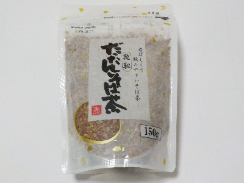

佐賀県唐津市相知町相知2635番地1
更新日 : 2026/02/07

だったん蕎麦と蕎麦って違うんですね。同じ蕎麦が付くので似たものかと思っていました。
だったん蕎麦は蕎麦の味がしなくて不思議だな？って思っていましたが、違って当たり前でした。
お茶の濃さはお好みでとありますが、パッケージ通りに急須に大さじ1杯入れて飲みました。しっかりとした香りと味が楽しめて美味しかったです。
美味しくて体に良さそうないい商品ですね。
パッケージには書いてないですが、実を煎ったものなのでそのまま食べれます。香ばしい実をポリポリ食べるのも美味しいです。普通のおやつにはならないけど、おつまみや夜のおやつにはなるんじゃないかな。
急須使わないで、コップに実を入れてお湯を注ぐと簡単に飲めます。残った実も食べれます。
賞味期限が近いので半額でした。お買い得でした。
【おいしいものを食べよう。】【たくさん寝よう。】
【ソロ活をしよう!】【季節感のあることをしよう。】【動画視聴はほどほどに。】【当サイトの全てのコンテンツは無断転載禁止です。】